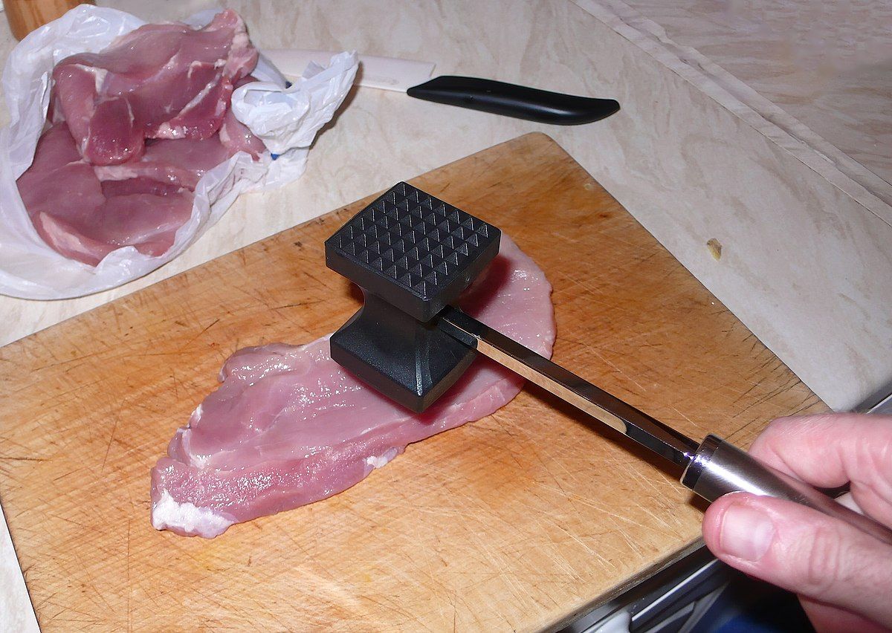
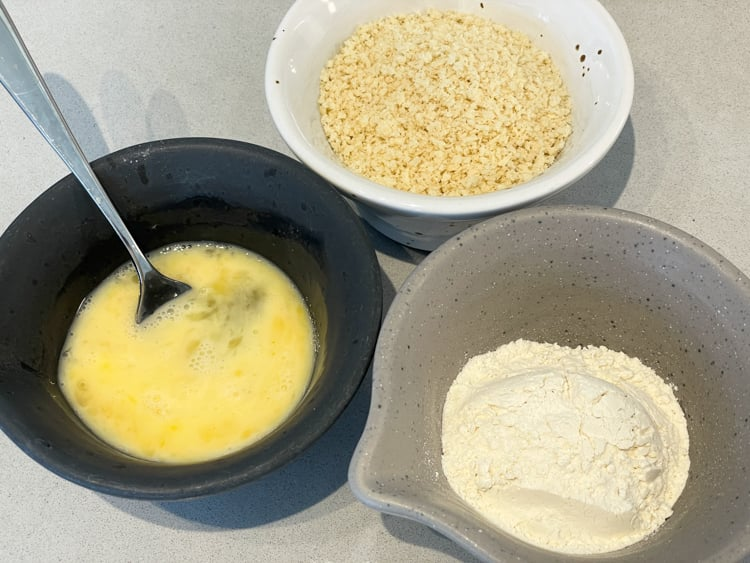
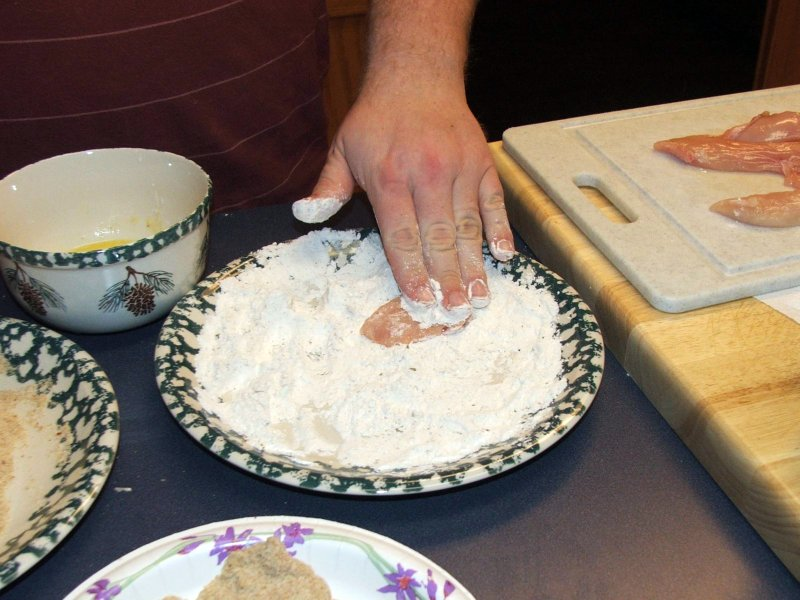
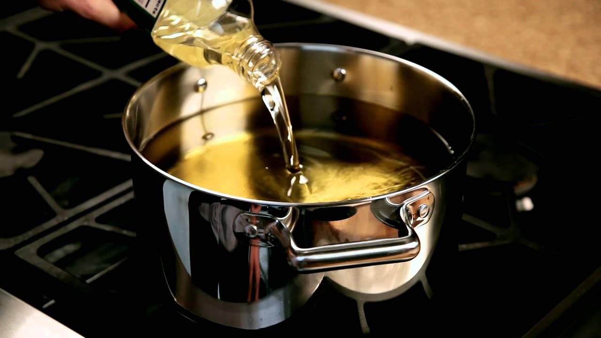
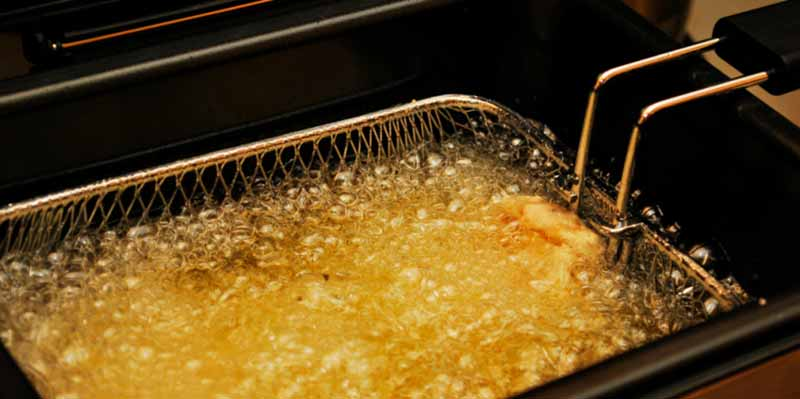
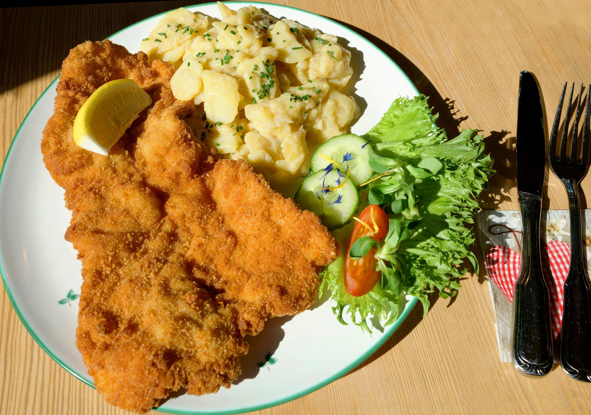

|  |  |  |
1. Tunna ut kotletterna & krydda dem. |
2. Häll i äggen, mjölet, ströbrödet varsin skål. |
3.Doppa kotletterna i varje skål först mjöl, sedan ägg & ströbröd, |
|  |  |  |
4. Värm upp matolja i en kastrull till 170°C, |
5. Bryna schnitzeln tills den är gyllenbrun. |
6. Serveras direkt, vi rekommenderar någon av de komplementen |
En wiener schnitzel är en österrikisk tunn kalvkotlett som man panerar med mjöl, ägg & ströbröd, sedan så bryner man schnitzeln så att den blir gyllenbrun, oftast så serverar man den med citron men man kan. själva schnitzeln kommer troligen från Norra Italien, rätten kom till österrike runt 1800‐talet vilket ledde till Wienerschnitzel (Viennese schnitzel[Viennese relaterar till österrikes huvudstad Vienna]) som var gjord med kalvkotletter men det finns flera varianter som til exempel Schweineschnitzel (Fläskschnitzel) & Cordon Bleu (En schnitzel fylld med skinka & ost). Ordet schnitzel kommer från det germanska ordet för en slice/en skiva.